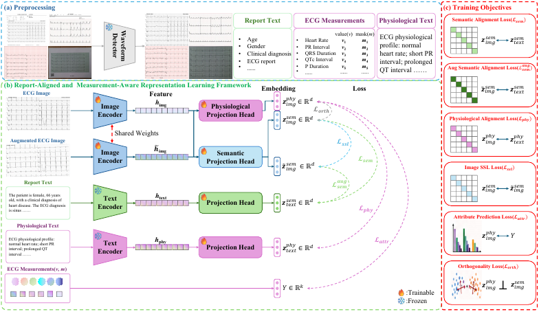
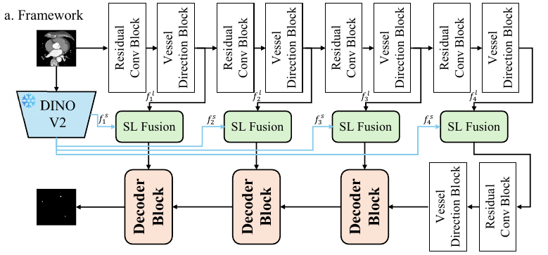
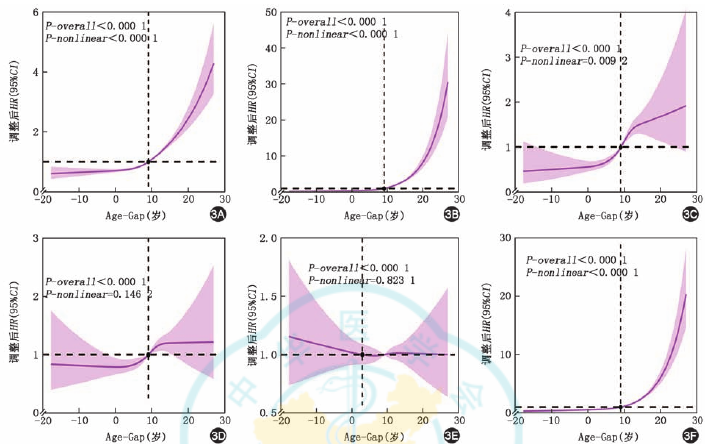
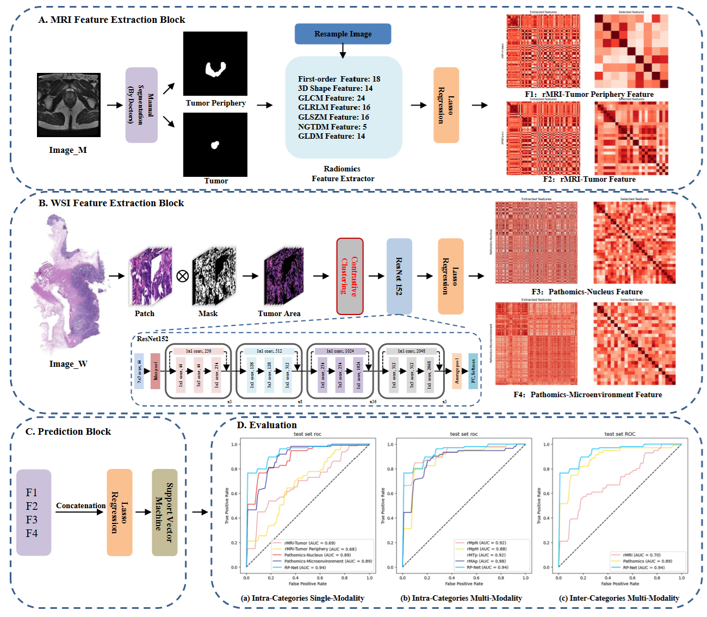
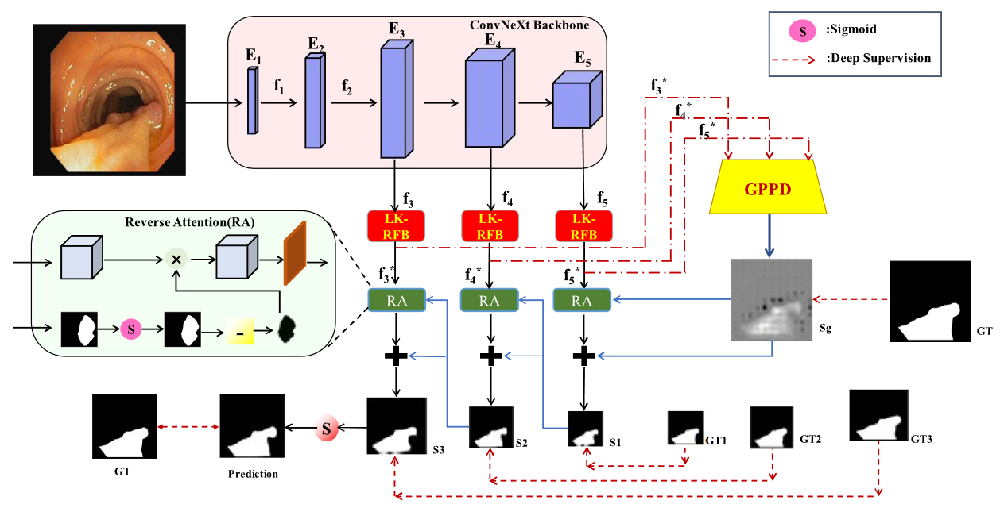
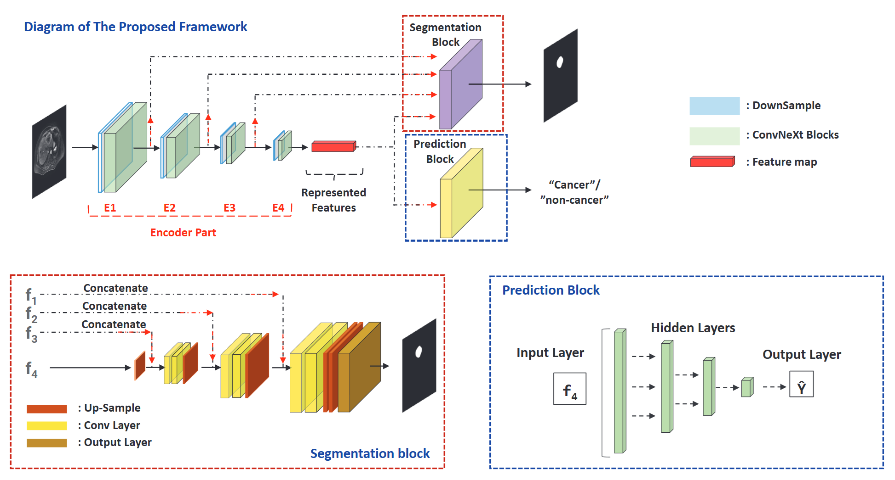
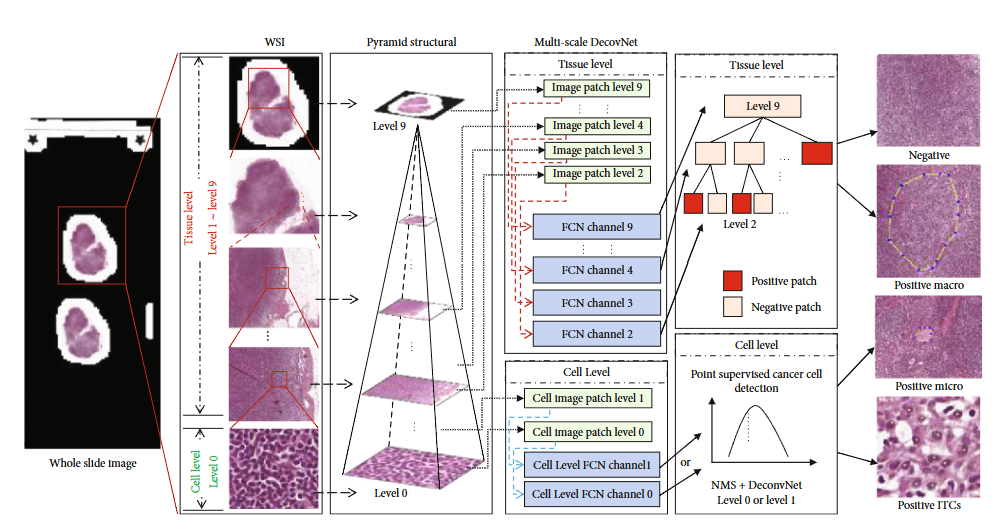

Weifeng Liu (刘伟峰)Ph.D. CandidateFaculty of Medicine, Dalian University of Technology/Department of Cardiology, General Hospital of Northern Theater Command Email: liuweifeng0327@mail.dlut.edu.cn / liuweifeng0327@gmail.com |
About Me
I am Weifeng Liu, currently a Ph.D. candidate at Faculty of Medicine, Dalian University of Technology and Department of Cardiology, General Hospital of Northern Theater Command, supervised by Prof. Peng Qu and Academician Yaling Han. Previously, I obtained my bachelor's degree in Computer Science and Technology from Beijing University of Civil Engineering and Architecture in 2021, supervised by Assoc. Prof. Dong Sui. In 2024, I obtained my master's degree in Intelligent Manufacturing Technology from Beijing University of Civil Engineering and Architecture, supervised by Assoc. Prof. Dong Sui and Prof. Maozu Guo. During Feb. 2024 - Sep. 2024, I worked as a research intern at the Life Simulation Research Center of the Beijing Academy of Artificial Intelligence, supervised by Prof. Henggui Zhang and Yacong Li. My previous research mainly focused on the application of computer vision in medical image analysis (including segmentation and multi-modal diagnosis), and my current research direction is the application of artificial intelligence (especially deep learning) in the diagnosis and treatment of cardiovascular diseases.
Education
- Doctor of philosophy (Ph. D.), Biomedical Engineering
- Advisor: Prof. Peng Qu and Academician Yaling Han
- Bachelor of Engineering (B.E.), Computer Science and Technology
- Advisor: Assoc. Prof. Dong Sui
- Graduated with Excellent Thesis Award
- Outstanding Graduate
Experience
- Research Intern at the Life Simulation Research Center
- Advisor: Prof. Henggui Zhang and Yacong Li
Publications

Weifeng Liu†, Yacong Li†, Miaohan Qiu, Zizhao Qi, Jing Li, Peng Qu, Yi Li, Yaling Han
IEEE BIBM (CCF-B, 2026), Regular Paper, accepted
† Equal contribution

Weifeng Liu†, Yacong Li†, Miaohan Qiu, Zizhao Qi, Jing Li, Peng Qu, Yi Li, Yaling Han
IEEE BIBM (CCF-B, 2026), Regular Paper, accepted
† Equal contribution

2021

Xiao Tian, Dong Sui, Weifeng Liu, Maozu Guo, Gongning Luo, Kuanquan Wang
IEEE BIBM (CCF-B, 2023) · Paper

Dong Sui, Weifeng Liu, Yue Zhang, Yang Li, Gongning Luo, Kuanquan Wang, Maozu Guo
Computers in Biology and Medicine (JCR Q1) · Paper

Dong Sui, Weifeng Liu, Maozu Guo, Yang Li, Lei Zhang, Gongning Luo, Kuanquan Wang
IEEE BIBM (CCF-B, 2022) · Paper

Dong Sui, Weifeng Liu, Jing Chen, Chunxiao Zhao, Xiaoxuan Ma, Maozu Guo, Zhaofeng Tian
BioMed Research International (JCR Q3) · Paper
Honors
- Excellent Master's Thesis of Beijing University of Civil Engineering and Architecture, 2024
- The honorary title of "Outstanding Graduate Student" of Beijing, 2024
- Second Prize Scholarship of Beijing University of Civil Engineering and Architecture, 2023
- Science and Technology Innovation Scholarship of Beijing University of Civil Engineering and Architecture, 2023
- First Prize Scholarship of Beijing University of Civil Engineering and Architecture, 2022
- Honorable Mention in the Mathematical Contest in Modeling (MCM)
- First Prize Scholarship of Beijing University of Civil Engineering and Architecture, 2021
- President's Scholarship of Beijing University of Civil Engineering and Architecture, 2021
- Excellent Bachelor's Thesis of Beijing University of Civil Engineering and Architecture, 2021
- The honorary title of "Outstanding Graduate Student" of Beijing University of Civil Engineering and Architecture, 2021
Professional Services
- Journal Reviewer:
International Journal of Intelligent Systems
IET Signal Processing - Conference Reviewer:
International Conference on Medical Image Computing and Computer Assisted Intervention (MICCAI): 2023
IEEE International Conference on Bioinformatics and Biomedicine (BIBM): 2026